IT113BlogPost
CHAPTER I: INTRODUCTION TO COMPUTING
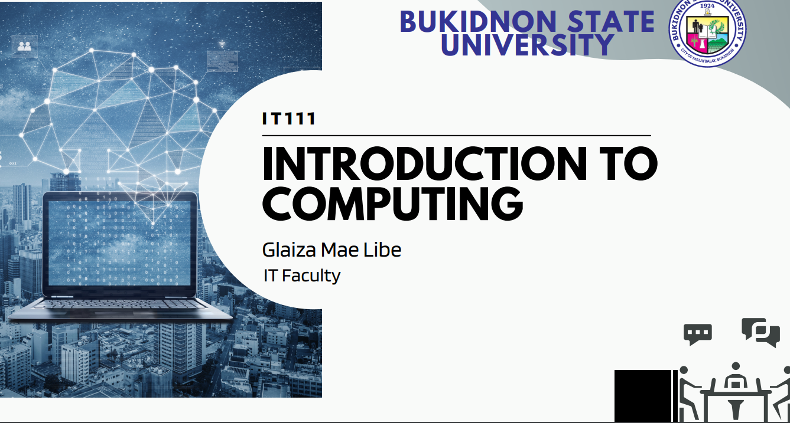Computing is the process of using computer systems to perform tasks, process data, and solve problems. It encompasses a wide range of activities, from software development and data analysis to networking and system administration, all of which rely on the use of computers and digital technology.
Learn moreCHAPTER II: PROFESSIONS & CAREERS IN COMPUTING
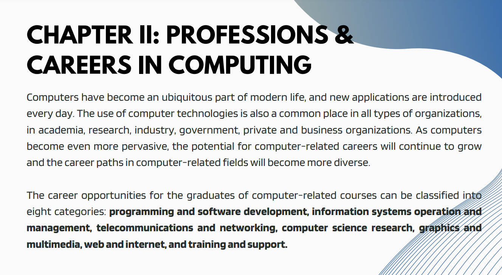Computing careers offer diverse opportunities in software development, data science, cybersecurity, and web development, specializing in designing, building, and maintaining technology systems in a dynamic and high-demand industry.
Learn moreCHAPTER III: INFORMATION PROCESSING CYCLE
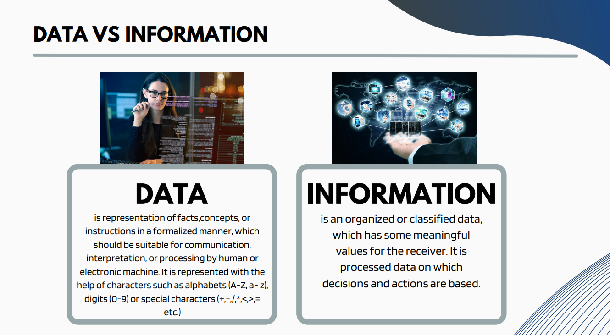The Information Processing Cycle is a crucial computer science concept involving input, processing, output, and storage, illustrating the flow of data within a computer system.
Learn moreCHAPTER IV: INTRODUCTION TO COMPUTER SYSTEMS
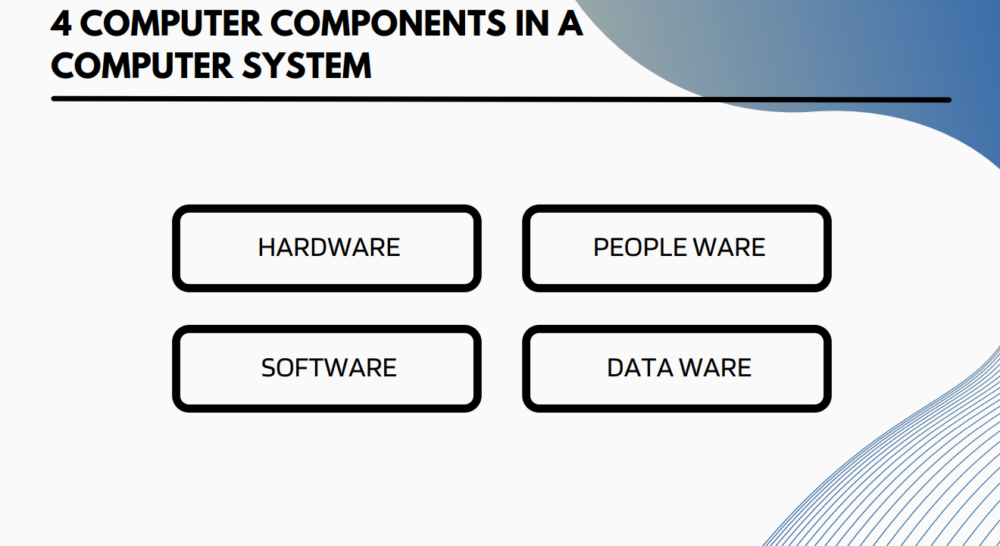Introduction to computer systems covers hardware, software, and functions of a computer, highlighting their role in modern society and their essential components for task execution and data processing.
Learn moreCHAPTER V: BASIC CONCEPT OF COMPUTER SECURITY
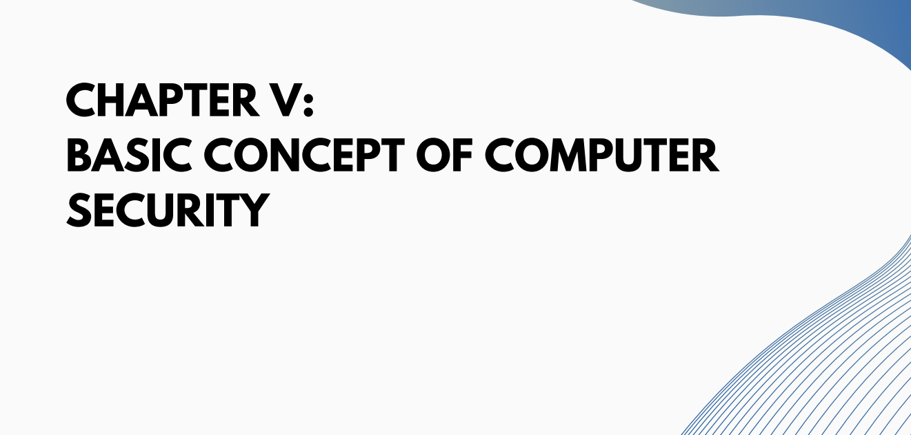Computer security involves protecting systems and data from unauthorized access, damage, or theft through strong passwords, firewalls, antivirus software, and regular system updates.
Learn moreCHAPTER VI: FAMOUS CYBERCRIME CASES

Famous cybercrime cases, involving hacking, data breaches, identity theft, and online fraud, underscore the importance of robust cybersecurity measures and law enforcement efforts in combating such crimes.
Learn moreCHAPTER I: INTRODUCTION TO COMPUTING
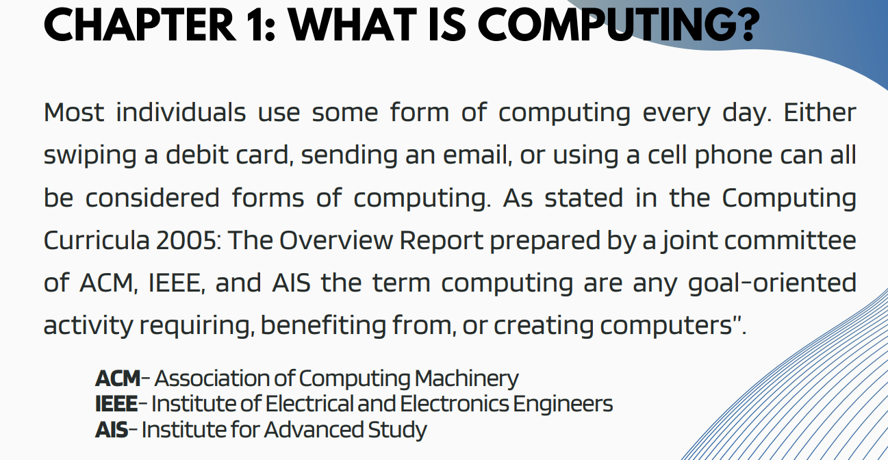Computing is the use of computers to solve problems or complete tasks. It can be as simple as using a calculator to add two numbers, or as complex as developing a new algorithm for machine learning. In the simplest terms, computing is about using machines to process information. This information can be anything from numbers to text to images. Computers can be used to store, retrieve, organize, and analyze information. They can also be used to create new information, such as by generating text orimages
click hereCHAPTER II: PROFESSIONS & CAREERS IN COMPUTING
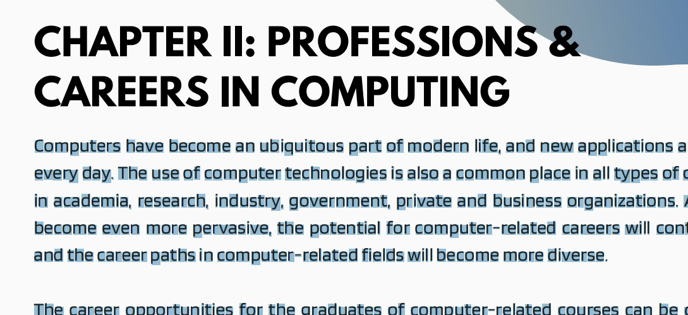Computers have become an ubiquitous part of modern life, and new applications are introduced every day. The use of computer technologies is also a common place in all types of organizations, in academia, research, industry, government, private and business organizations. As computers become even more pervasive, the potential for computer-related careers will continue to grow and the career paths in computer-related fields will become more diverse. The career opportunities for the graduates of computer-related courses can be classified into eight categories: programming and software development, information systems operation and management, telecommunications and networking, computer science research, graphics and multimedia,web and internet, and training and support.
click hereCHAPTER III: INFORMATION PROCESSING CYCLE
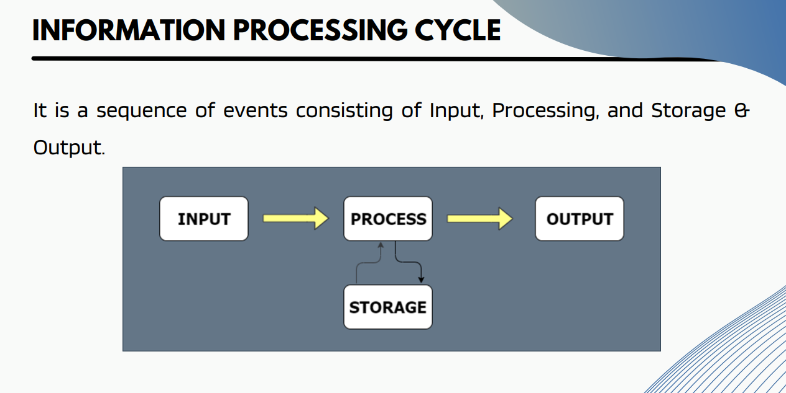The information processing cycle refers to the order of events that go into processing information, including input, processing, storage and output. Input consists of acquiring, entering and validating the data, while output consists ofinteractive queries and the running ofreports.
click hereCHAPTER IV: INTRODUCTION TO COMPUTER SYSTEMS
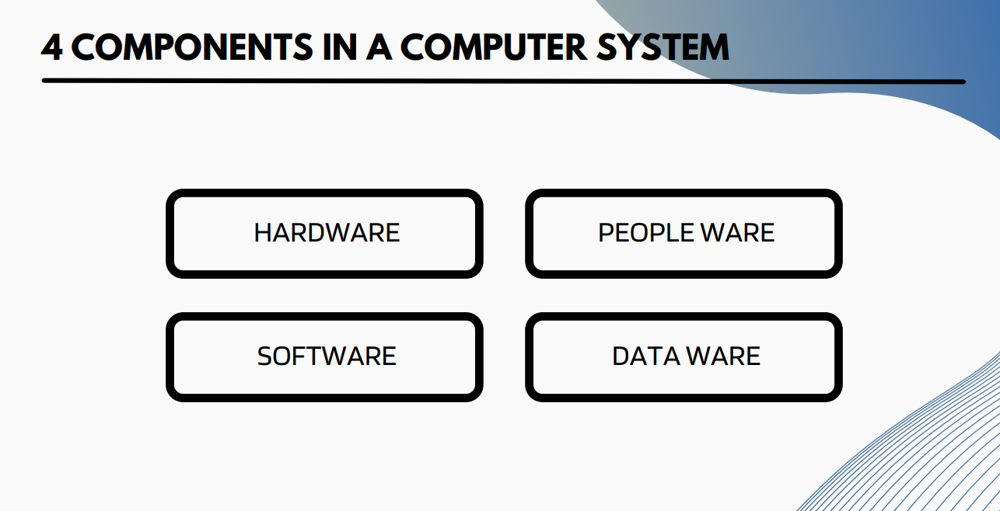Is a collection of electronic instructions that programmers write using a programming languageand that a computer’s CPU can interpret to carry out a specific task click here
CHAPTER V: BASIC CONCEPT OF COMPUTER SECURITY
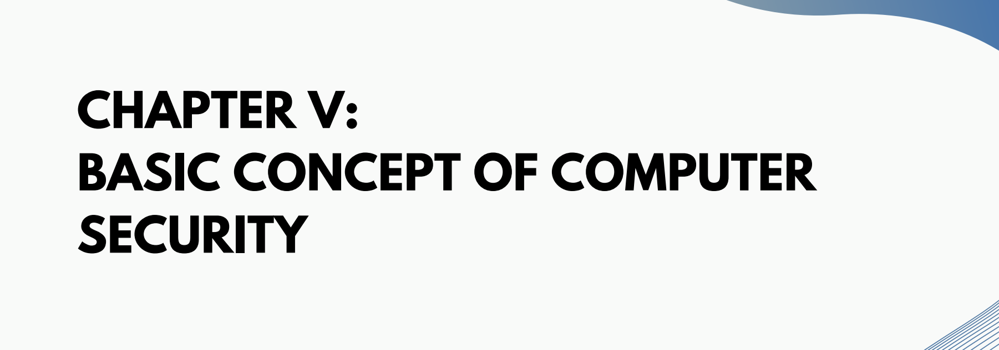Computer security involves protecting systems and data from unauthorized access, damage, or theft through strong passwords, firewalls, antivirus software, and regular system updates.
click hereCHAPTER VI: FAMOUS CYBERCRIME CASES
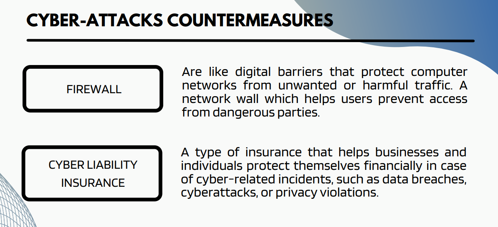 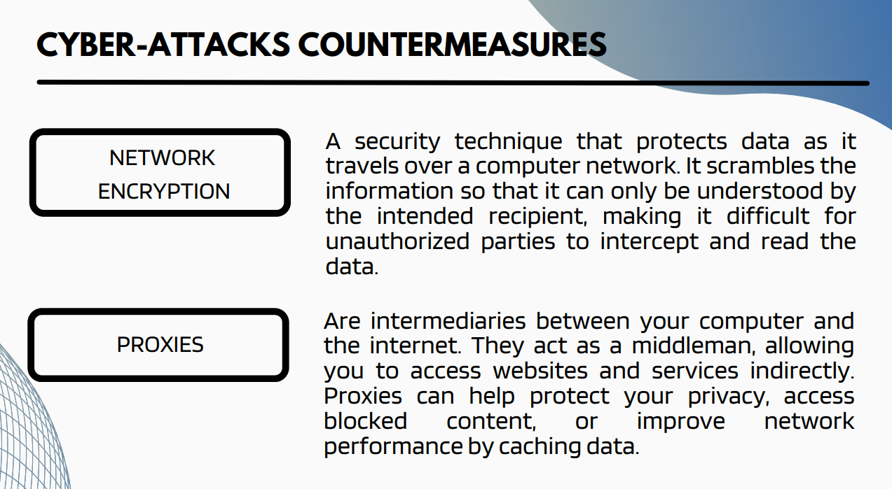 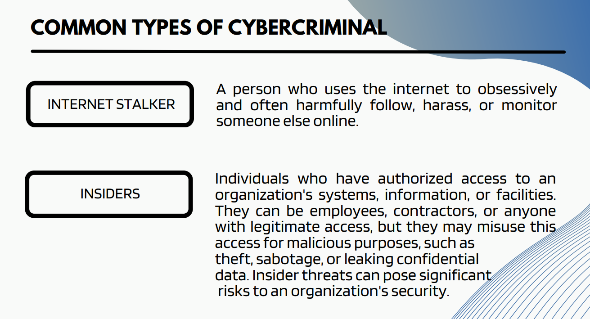Famous cybercrime cases, involving hacking, data breaches, identity theft, and online fraud, underscore the importance of robust cybersecurity measures and law enforcement efforts in combating such crimes.
click here